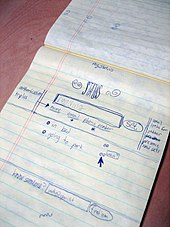

Twitter è un servizio di notizie e microblogging fornito dalla società Twitter, Inc. con sede a San Francisco (Stati Uniti).
Da quando Jack Dorsey lo creò nel marzo 2006 e lanciò nel luglio dello stesso anno, la rete ha guadagnato popolarità in tutto il mondo;
si stima abbia più di 300 milioni di utenti che generano 65 milioni di tweet al giorno e gestisca più di 800.000 richieste di ricerca giornaliere.
È stato anche soprannominato "l'SMS di Internet".
Twitter è un servizio di notizie e microblogging fornito dalla società Twitter, Inc. con sede a San Francisco (Stati Uniti).
Da quando Jack Dorsey lo creò nel marzo 2006 e lanciò nel luglio dello stesso anno, la rete ha guadagnato popolarità in tutto il mondo;
si stima abbia più di 300 milioni di utenti che generano 65 milioni di tweet al giorno e gestisca più di 800.000 richieste di ricerca giornaliere.
È stato anche soprannominato "l'SMS di Internet".La rete consente di postare brevi messaggi di testo di breve lunghezza, con un massimo di 280 caratteri, chiamati tweet, che vengono visualizzati nella pagina principale dell'utente. Gli utenti possono iscriversi ai tweet di altri utenti, questo si chiama "seguire" e gli abbonati si chiamano "seguaci", follower e talvolta tweep.
Nel 2012 ha raggiunto i 500 milioni di iscritti e 200 milioni di utenti attivi che accedono almeno una volta al mese. Nel 2013 era uno dei dieci siti più visitati; nel 2018 Twitter contava oltre 321 milioni di utenti attivi mensilmente e fatturava oltre 2,5 miliardi di dollari all'anno, con un valore di mercato superiore a 10 miliardi di dollari. [Leggi su wikipedia]
Creazione di Twitter
La nascita di Twitter risale al 2006, dopo un lungo brainstorming fra i membri di Odeo, una società californiana che stava per lanciare una particolare piattaforma di creazione e gestione dei podcast dal funzionamento molto simile a quello di una casella vocale.
Il primo prototipo della piattaforma è stato testato internamente fra gli impiegati di Odeo, mentre la versione finale è stata lanciata e aperta al pubblico il 15 luglio 2006. A ottobre del 2006 alcuni membri di Odeo hanno creato la Obvious Corporation, assorbito Odeo e riscattato tutti i suoi progetti, inclusi Odeo.com e Twitter.com, dagli investitori e dagli azionisti della precedente società. Nell'aprile del 2007 Twitter si è costituita come società indipendente.
(schizzo di twitter)